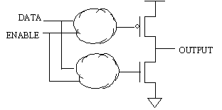
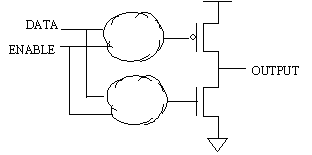
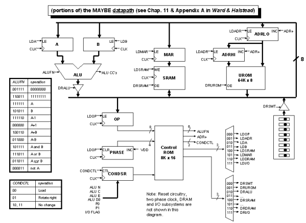

Problem 1.
Consider the following circuit:

The heavy lines represent busses, which are many signals grouped
together, e.g., an eight-bit bus is eight separate signal wires that
are treated as a group. When a bus connects to one or more
components, it's just shorthand for drawing the individual signal
wires between those components.
-
The components with triangular schematic symbols are tristate drivers
that operate like buffers except that they have an additional control
input called an enable. When the enable is high, the buffer is on and
the input value is driven onto the output. When the enable is low,
the buffer is off and doesn't drive anything onto its output (i.e.,
the output pin is in a high-impedance state). What rules should the
designer follow when designing the logic that generates DRA, DRB and
DRALU in order to ensure that the DBUS signals always have legitimate
values?
-
 Draw a schematic showing how a tristate driver might
be implemented using mosfets. Hint: The following schematic shows one
way of implementing a tristate driver.

You just have to fill in the logic inside each of the clouds-think
about for what values of DATA, ENABLE you want the pullup to be on and
replace the upper cloud with one or more logic gates that implement
that equation. Ditto for the pulldown and lower cloud.
Draw a schematic showing how a tristate driver might
be implemented using mosfets. Hint: The following schematic shows one
way of implementing a tristate driver.

You just have to fill in the logic inside each of the clouds-think
about for what values of DATA, ENABLE you want the pullup to be on and
replace the upper cloud with one or more logic gates that implement
that equation. Ditto for the pulldown and lower cloud.
-
The register-like symbols labeled "Reg A" and "Reg B" also have an
additional enable input and are called load-enabled registers. When
the enable is high, the register will be loaded from the incoming
data. When the enable is low, the register reloads itself with its
previous value. Show how to implement a load-enabled register from a
regular D-register and a 2-way multiplexer.
-
It's considered bad practice to control the loading of a register by
"gating" its clock, i.e., by adding some logic that controls whether
or not the register sees a rising clock edge. Briefly explain why
"gating the clock" is discouraged. Hint: consider the effects of
clock skew and logic hazards.
-
The arithmetic-logic unit (ALU) has two data inputs (A and B) and, in
this circuit, can perform only two operations, based on the single
control signal FN:
when FN = 0, the ALU output is A-B
when FN = 1, the ALU output is B-A
The ALU also generates two condition codes which give us some
additional information about the ALU output:
Z = 1 when the ALU output is the number "0"
N = 1 when the ALU output is a negative number
Assuming that we have 8-bit data values and use a two's complement
representation for the data values processed by the ALU, draw
gate-level schematics for the logic that generates the Z and N signals
from the ALU output value.
-
Your job is to build a controller that will cause the circuit above to
execute the following algorithm which computes the greatest common
divisor of two inputs:
while (a != b)
if (a > b) a = a - b;
else b = b - a;
The controller will be a state machine that takes 2 bits of input (Z
and N) and produces control signals for the data paths (DRA, DRB,
DRALU, LDA, LDB, FN).
Draw a state diagram for the controller. Outputs from your FSM
should depend only on the current state. Indicate which are the
initial and final states of your FSM on the diagram.
-
Supply a truth table for the logic that generates the control signals.
Problem 2.
The material in this question will not covered by any quizzes.
It's presented here as an extended example of a programmable datapath.
The following diagram shows the datapath and control circuitry for
a nifty little microprogrammed architecture the students used to
build in the 6.004 lab:

Some features of the MAYBE:
- The datapath is 8 bits wide. All the subsystems connect to a
common 8-bit bus which routes data between the subsystems. In
a particular cycle, one of the subsystems is selected to drive data
onto the bus (chosen by the DR signals) which can then be loaded into
the selected destination (chosen by the LD signals).
- The Control ROM is programmed as a nanointerpreter that
executes one of 256 microinstructions selected by the contents of the
OP register. Each microinstruction consists of up to 16 nanoinstruction;
the nanoPC is generated by the PHASE counter which is reset to 0 each
time the OP register is loaded.
- The Control ROM is programmed using the following template:
| Opcode | Phase | COND | = | ADR+ | ALU | CC | DRSEL | LDSEL | Comment |
| ******** | **** | * | = | 1 | 111111 | 11 | 001 | 000 | Opcode = uROM; ADR+ |
"*" is used to match either "0" or "1" on the corresponding address
line. The template above initializes every nanoinstruction in the Control ROM to
an operation that reads the next byte from the UROM (DRSEL = 001),
places it in the OP register (LDSEL = 000), and then increments the
ADRHI/ADRLO registes (ADR+ = 1).
- The UROM contains a microprogram that is executed by the
nanointerpreter. Each microinstruction in the UROM begins with an
8-bit opcode; microinstruction execution begins by loading the opcode
into the OP register. As the nanointerpreter executes the nanocode
associated with that opcode, additional operand bytes may be fetched
from the UROM. The final step in executing a microinstruction is to
load the OP register with the opcode of the next microinstruction.
- The ADRHI/ADRLO registers form a 16-bit program counter
for the UROM program. These registers can be loaded from the
data bus (eg, when doing a branch) or simply incremented by
asserting ADR+. Note that the ADRHI/ADRLO registers are incremented
at the end of the cycle after they have been used as the address
for the UROM in the current cycle.
-
If we inadvertently switch connections on two of the wires that
run from the MAR register to the address inputs of the SRAM will
operation be affected? Is your answer the same if we switch two
wires running between ADRHI/ADRLO and the address inputs to the
UROM? If the answers are not the same, what constitutes the
difference between the SRAM and UROM?
-
What, if anything, prevents two drivers from putting conflicting
data on the data bus of the MAYBE (ignore transients during propagation
delays of the control circuitry)? Can such conflicts happen if there
are programming errors in the Control ROM?
-
Given a big enough Control ROM, could the LDSEL and DRSEL
decoders be eliminated (producing the load and drive signals directly
as Control ROM outputs)? If so, what advantage might this have?
-
Execution of a nanoprogram can be influenced by information
for the datapath? Explain how a nanoprogram can make data-dependent
decisions.
-
Given a big enough Control ROM, could the condition shift register
be eliminated (using the condition bits directly as Control ROM inputs)?
If so, what advantage might this have? How many more (or fewer) outputs
and inputs would the Control ROM need to have to implement this? What
would be the size (in bits) of the Control ROM?
-
The nanoinstruction shown above selects the UROM as the data source
and asserts ADR+ during the same clock cycle. How does this work, i.e.,
is the original or incremented address used when accessing the UROM?
-
What does the following nanocode program do?
| Opcode | Phase | COND | = | ADR+ | ALU | CC | DRSEL | LDSEL | Comment |
| 00001010 | 0000 | * | = | 1 | 111111 | 11 | 001 | 101 | MAR = uROM; ADR+ |
| 00001010 | 0001 | * | = | 0 | 111111 | 11 | 100 | 010 | A = SRAM |
| 00001010 | 0010 | * | = | 1 | 111111 | 11 | 001 | 101 | MAR = uROM; ADR+ |
| 00001010 | 0011 | * | = | 0 | 111111 | 11 | 100 | 011 | B = SRAM |
| 00001010 | 0100 | * | = | 1 | 111111 | 11 | 001 | 101 | MAR = uROM; ADR+ |
| 00001010 | 0101 | * | = | 0 | 100110 | 00 | 010 | 100 | SRAM = A + B; latch CCs |
| 00001010 | 0110 | * | = | 1 | 111111 | 11 | 001 | 000 | OP = uROM; ADR+ |
-
What does the following nanocode program do?
| Opcode | Phase | COND | = | ADR+ | ALU | CC | DRSEL | LDSEL | Comment |
| 00001011 | 0000 | * | = | 1 | 111111 | 11 | 001 | 010 | A = uROM; ADR+ |
| 00001011 | 0001 | * | = | 1 | 111111 | 11 | 001 | 101 | MAR = uROM; ADR+ |
| 00001011 | 0010 | * | = | 0 | 111111 | 11 | 100 | 011 | B = SRAM |
| 00001011 | 0011 | * | = | 1 | 111111 | 11 | 001 | 101 | MAR = uROM; ADR+ |
| 00001011 | 0100 | * | = | 0 | 100110 | 00 | 010 | 100 | SRAM = A + B; latch CCs |
| 00001011 | 0101 | * | = | 1 | 111111 | 11 | 001 | 000 | OP = uROM; ADR+ |
-
What does the following nanocode program do?
| Opcode | Phase | COND | = | ADR+ | ALU | CC | DRSEL | LDSEL | Comment |
| 00001100 | 0000 | * | = | 1 | 111111 | 11 | 001 | 010 | A = uROM; ADR+ |
| 00001100 | 0001 | * | = | 0 | 111111 | 11 | 001 | 001 | ADR = uROM |
| 00001100 | 0010 | * | = | 0 | 111111 | 11 | 010 | 001 | ADR = A |
| 00001100 | 0011 | * | = | 1 | 111111 | 11 | 001 | 000 | OP = uROM; ADR+ |
-
What does the following nanocode program do?
| Opcode | Phase | COND | = | ADR+ | ALU | CC | DRSEL | LDSEL | Comment |
| 00010111 | 0000 | * | = | 1 | 111111 | 11 | 001 | 010 | A = uROM; ADR+ |
| 00010111 | 0001 | * | = | 0 | 111111 | 01 | 010 | 010 | Shift CC's |
| 00010111 | 0010 | 1 | = | 0 | 111111 | 11 | 001 | 001 | ADR = uROM |
| 00010111 | 0011 | 1 | = | 0 | 111111 | 11 | 010 | 001 | ADR = A |
| 00010111 | 0100 | 1 | = | 1 | 111111 | 11 | 001 | 000 | OP = uROM; ADR+ |
| 00010111 | 0010 | 0 | = | 1 | 111111 | 11 | 001 | 010 | A = uROM; ADR+ |
| 00010111 | 0011 | 0 | = | 1 | 111111 | 11 | 001 | 000 | OP = uROM; ADR+ |
-
What does the following nanocode program do?
| Opcode | Phase | COND | = | ADR+ | ALU | CC | DRSEL | LDSEL | Comment |
| 00000011 | 0000 | * | = | 0 | 110011 | 11 | 010 | 101 | MAR = 11111111 |
| 00000011 | 0001 | * | = | 0 | 111111 | 11 | 100 | 010 | A = SRAM |
| 00000011 | 0010 | * | = | 0 | 111110 | 11 | 010 | 100 | SRAM = A - 1 |
| 00000011 | 0011 | * | = | 1 | 111111 | 11 | 001 | 101 | MAR = uROM; ADR+ |
| 00000011 | 0100 | * | = | 0 | 111111 | 11 | 100 | 011 | B = SRAM |
| 00000011 | 0101 | * | = | 0 | 111111 | 11 | 010 | 101 | MAR = A |
| 00000011 | 0110 | * | = | 0 | 101011 | 11 | 010 | 100 | SRAM = B |
| 00000011 | 0111 | * | = | 1 | 111111 | 11 | 001 | 000 | OP = uROM; ADR+ |